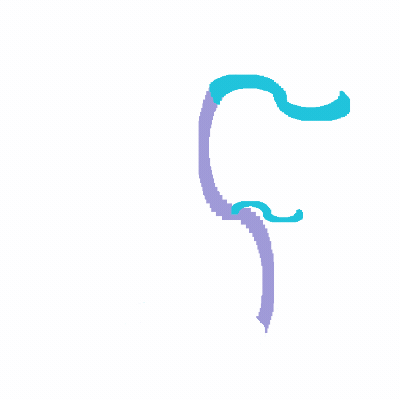
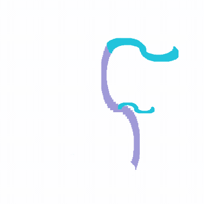

ふじえもん
 

ふじえもんのおへやへようこそ．
趣味
- 読書 今読んでいる本やレビューはブクログ ふじえもんのほんだなで．
- 日本酒
- デバイス・ツール
| 書名 | 一言 |
|---|---|
| Dr.STONE | 27巻．科学に興味を持ったら読むとさらにワクワクが掻き立てられる楽しい漫画．2023年時点で最高に結末に納得できた作品． |
| 浜村渚の計算ノート | 中学時代から読んでいる，数学が好きな少女のお話．最近出た９巻目も必見です． |
| 技術書の読書術 | 本の選び方とかメモを管理することなどインプットすることへの考え方の幅が広がりました． |
| Google流ダイバーシティ&インクルージョン | プロダクトは誰のために作るのか．その対象が開発チームにいることがどんな効果をもたらすか勉強になりました． |
| サーバントリーダーシップ | チーム開発をするときにどうしたらチーム，各メンバーの良さ，能力を引き出せるかを考えていたら辿り着いたサーバントリーダーシップ． |
| 銘柄 | 一言 |
|---|---|
| 八仙 ピンクラベル吟醸 | 最初に呑んだ日本酒． |
| 田酒 | 何か良いことがあったとき，季節の変わり目に気合いを入れるために飲む地酒． |
| OMEGANE | 甘口のスパークリングで酸味が感じられる福井のお酒．お👓 |
| 鳩正宗 | フルーティな感じでりんご酢がたしかにちょこっと入ってそうな味． |
| 千歳鶴 | 辛口だけど癖が少ない感じで後味が好み． |
| 二世古青ラベル彗星 | やや辛口で後味がすっきりしてる． |
| 品名or型番 | 一言 |
|---|---|
| DELL-U2723QX | 27インチの4Kモニター．発色にこだわって選びました．豊富なインターフェースがポイント．スピーカーが無いけどイヤホンを使っているので問題無し． |
| HHKB Professional HYBRID Type-S 白 | ハッカー憧れ(?)のキーボード⌨️．打鍵感やコンパクトな配列がお気に入りです．最近は一部桜色のキートップに交換しました． |
| iPad Air4 | タブレットで読書も動画視聴もゲームも捗ります．GoodNotesを入れて使っています． |